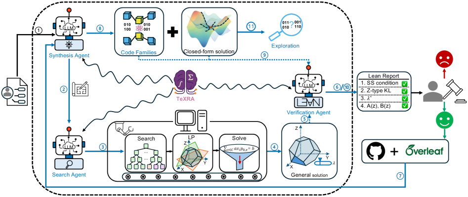
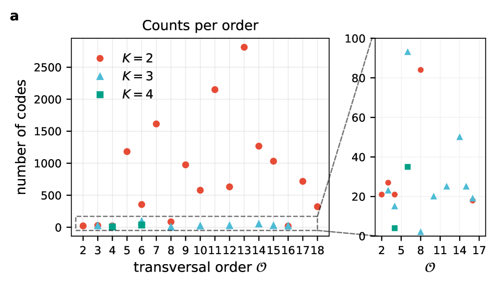

Quantum error-correcting code constructions and no-go results are formally verified in a Lean 4 layer integrated with the TeXRA multi-agent platform.
Abstract
Exact scientific discovery requires more than heuristic search: candidate constructions must be turned into exact objects and checked independently. We address this gap by extending TeXRA with an independent Lean 4 verification layer, turning it into a human-guided multi-agent platform for exact scientific discovery. The platform couples symbolic synthesis, combinatorial and linear-programming search, exact reconstruction of numerical candidates, and formal verification in Lean. We apply this platform to nonadditive quantum error-correcting codes with prescribed transversal diagonal gates within the subset-sum linear-programming (SSLP) framework. In the distance-2 regime where logical states occupy distinct residue classes, the platform yields a Lean-certified catalogue of 14,116 codes for $K\in\{2,3,4\}$ and up to six physical qubits, realizing cyclic logical orders 2 through 18, from which we extract closed-form infinite families. We also construct a residue-degenerate $((6,4,2))$ code implementing the logical controlled-phase gate $\mathrm{diag}(1,1,1,i)$. At distance 3, we resolve the transversal-$T$ problem for $((7,2,3))$ codes within the complementary binary-dihedral $\mathrm{BD}_{16}$ setting: among the 12 candidates surviving the SSLP filters, 10 admit exact realizations and 2 are excluded by no-go proofs. All accepted constructions, families, and no-go results are formalized and checked in Lean, illustrating how AI-assisted workflows can bridge search, exact reconstruction, and formal proof in the physical sciences.
Problem
Discovering nonadditive quantum error-correcting codes with prescribed transversal diagonal gates requires turning numerical search candidates into exact objects with independent formal verification. Heuristic search alone is insufficient for exact scientific claims.
Approach
The authors extend the TeXRA multi-agent platform with an independent Lean 4 verification layer. The platform couples symbolic synthesis, combinatorial and linear-programming search, exact reconstruction of numerical candidates, and formal verification. It is applied within the subset-sum linear-programming (SSLP) framework for quantum codes with transversal diagonal gates.

Figure 1: Human-guided multi-agent workflow for quantum code discovery. A problem specification initializes the Synthesis Agent (1), which derives symbolic reformulations, parameter templates, and proof goals and dispatches executable search programs to the Search Agent (2). The Search Agent performs combinatorial enumeration, linear-program construction, and numerical solving (3) to generate cand
Results
The platform produces a Lean-certified catalogue of 14,116 codes for K in {2,3,4} and up to six physical qubits, realizing cyclic logical orders 2 through 18. At distance 3, among 12 candidates for ((7,2,3)) codes with transversal-T in the BD_16 setting, 10 admit exact realizations and 2 are excluded by no-go proofs. All constructions and no-go results are formalized in Lean.

Figure 4: Global statistics of the diagonal-transversal code catalogue. We aggregate all nondegenerate distance- 2 codes with K\leq 4 and n\leq 6 obtained from the multi-agent SSLP search. (a) Number of codes found at each transversal order \mathcal{O} , separated by logical dimension K=2,3,4 (colours and markers as indicated in the legend). (b) Number of codes as a function of the modulus m , res